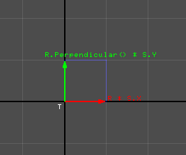
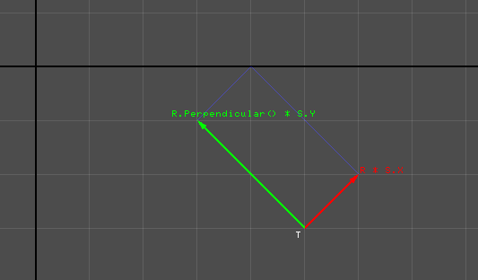
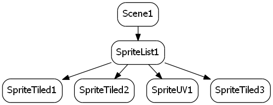

Sce.PlayStation.HighLevel.GameEngine2D provides some basic functionalities needed to create simple 2D games.
Contents
What GameEngine2D covers:
The library is split into 2 namespaces:
Sce.PlayStation.HighLevel.GameEngine2D.Base
Sce.PlayStation.HighLevel.GameEngine2D.Base contains various core 2D functionalities, such as extensions to the math library, rendering functionalities (sprite rendering and immediate mode), input helpers, cameras, font maps, a matrix stack etc.Sce.PlayStation.HighLevel.GameEngine2D
Sce.PlayStation.HighLevel.GameEngine2D contains the "game engine" (scenegraph, scheduler, actions etc.) built entirely on top of Sce.PlayStation.HighLevel.GameEngine2D.Base.
Some of the higher level aspects of the GameEngine2D library are loosely based on Cocos2D (http://www.cocos2d-iphone.org/), in particular it uses similar core objects like Director, Scheduler, ActionManager.
The source code for the library is provided.
What GameEngine2D doesn't cover:
- GameEngine2D doesn't provide any functionalities for collision detection, except perhaps a few simple generic routines in Sce.PlayStation.HighLevel.GameEngine2D.Base.Math.
- GameEngine2D doesn't provide any functionalities for physics, sounds, network.etc.
- It doesn't have any explicit UI system, although some UI elements can easily be implemented on top of it, using its simple text and sprite rendering capabilities for example (as shown in some of the samples).
Registering a Library in a Solution
To use GameEngine2D, add the library Sce.PlayStation.HighLevel.GameEngine2D to the solution.
For the method for adding a library to a solution, refer to "Basic Usage for PSM Studio Integrated Development Environment - Adding a Compiled Library (dll) to a Solution".
Initialization
The HelloSprite sample illustrates basic usage.
First step is the Director initialization. The Director is the singleton that lets you access all GameEngine2D global objects, via Director.Instance. It must be initialized with Director.Initialize():
// create our own graphics context (optional) Sce.PlayStation.Core.Graphics.GraphicsContext context = new Sce.PlayStation.Core.Graphics.GraphicsContext(); // the maximum number of sprites you intend to use (not including particles) uint sprites_capacity = 500; // the maximum number of vertices that can be used in debug draws uint draw_helpers_capacity = 400; // initialize GameEngine2D's singletons, passing context from outside Director.Initialize( sprites_capacity, draw_helpers_capacity, context );Make an empty scene
After initialization we need to create a scenegraph. The simplest scene we can make is composed of only the root node, a Scene object:
var scene = new Scene();Loop
Now that we are ready to run, we can kick the main loop using:
Director.Instance.RunWithScene( scene );Advanced loop
Alternatively, you can also handle the loop manually. In that case you are responsible for calling the Director.Instance's Update(), Render(), and PostSwap() in the appropriate order:
Director.Instance.RunWithScene( scene, true ); while ( true ) { Sce.PlayStation.Core.Environment.SystemEvents.CheckEvents(); Director.Instance.Update(); Director.Instance.Render(); Director.Instance.GL.Context.SwapBuffers(); Director.Instance.PostSwap(); }
General structure
GameEngine2D's scenegraph is used for storing a game world node hierarchy, and for the rendering traversal. It is not used for anything else. For example, there is no traversal for calling Update() functions (this is handled by the Scheduler).
Each scenegraph's root node is a Scene node. Scene navigation is handled with a scene stack via the Director.Instance singleton (similar to Cocos2D).
In addition, in GameEngine2D the Director object also holds most of the other global objects used by the GameEngine2D library.
The base Node object has a list of children nodes (accessible via the Children property), and at most one parent node (accessible via the Parent property). Parent and Children are edited using AddChild(), RemoveChild(), RemoveAllChidren().
Node updating
Each node can have "actions" associated to it. Actions are managed by the ActionManager.Instance, but operated mainly via Node member functions.
Each node can have scheduled functions, like their main Update function for instance, associated to it. Scheduled functions are managed by the Scheduler.Instance, but operated mainly via Node member functions.
ActionManager and Scheduler are similar to Cocos2D's.
Node positionning properties
The base Node object has a 2D transform that consists of Position/Rotation/Scale/Skew components. Pivot is used as a pivot for the Rotation/Scale/Skew part of the transform. This "local" transform (local relative to the Parent node) is returned by GetTransform(). In term of code, the node transform matrix is equivalent to:
Matrix3.Translation( Position ) * Matrix3.Translation( Pivot ) * Matrix3.Rotation( Rotation ) * Matrix3.Scale( Scale ) * Matrix3.Skew( new Vector2( FMath.Tan( Skew.X ), FMath.Tan( Skew.Y ) ) ) * Matrix3.Translation( -Pivot )Setting any of the properties above makes the node and its subtree move, rotate, get rescaled or skewed.
Node objects hierarchy
This is the type hierarchy for scenegraph nodes. Nodes in grey are intermediary types you never directly instantiate.
SpriteUV and SpriteTiled let you manipulate individual sprites objects derived from Node. In addition to the base node's transform properties (which is functional for sprite nodes as well), SpriteUV and SpriteTiled have a Quad property that determines their geometry. The Quad property being a TRS object (a translation (T), rotation (R) and scale (S)), it could also be viewed as a second local transform for the sprite (one that transforms the unit quad into an oriented, scaled sprite rectangle). But for clarity we just declare it to be the "geometry" of the quad.
Make nodes move using the Scheduler
Most of the time you will move Node objects inside scheduled functions. A simple quick way to register a function to be called everyframe for a given node is to register a lambda function in the Scheduler, using Node.Schedule:
sprite = new SpriteUV(); // set an initial position sprite.Position = new Vector2(2,3); sprite.Schedule( ( dt ) => { // this will get called everyframe float period_in_seconds = 3.0f; float wave = ( ( 1.0f + FMath.Sin( (float)Director.Instance.CurrentScene.SceneTime * Math.Pi / period_in_seconds ) ) * 0.5f ); sprite.Rotation = Vector2.Rotation( Math.Pi * 2.0f * wave ); sprite.Scale = new Vector2( 1.0f + 2.0f * wave ); } );Another way to call a node function everyframe is to derive a class from Sprite, override the Update() function, and schedule it with Node.ScheduleUpdate().
Make nodes moves using Action
Actions that act on node properties can be used to move nodes. The following code will kick an animation that will move sprite to position (10,5) in 0.1 second:
sprite.RunAction( new MoveTo( new Vector2(10.0f,5.0f), 0.1f ) );By setting the Tween property of those particular actions, you can change the interpolation curve.:
sprite.RunAction( new MoveTo( new Vector2(10.0f,5.0f), 0.1f ) { Tween = (t) => Math.PowEaseIn(t,4.0f) } );Some other actions affect the positionning properties, some similar to Cocos2D (MoveTo, MoveBy, ScaleTo, ScaleBy etc.) and some more generic, such as ActionTweenGenericVector2, ActionTweenGenericVector4, ActionTweenGenericVector2Scale, ActionTweenGenericVector2Rotation).
About sprite geometry: TRS
The sprite Quad property (a TRS object) lets you specify the geometry of the sprite, by setting a size, position and orientation in the node local space (remember that the sprite basic transform properties are still active).
- The T property (T stands for translation) is the coordinate of the "bottom left" point of the rectangle.
- The S property (S stands for scale) and is the size of the rectangle.
- The R property (R stands for rotation) represents the orientation of the rectangle (you can see it as the being the local x axis of the rectangle). Note that the rotation of a TRS is expressed directly as a unit vector, instead of say a scalar representing the angle - although there is also an interface for setting and getting R as an angle. The TRS doesn't normalize R on set, so it is up to you to keep it normalized. Setting the R property via RotationNormalize instead of R will normalize it. No rotation means that R is set to (1,0), ie the x axis.
Here are some examples showing what T, R, S quantities mean. On those images, the world's x and y axis are shown in thick black lines. In the context of sprites, you can also see those line as the node's local coordinate system (i.e. the space that comes after GetTransform()).
The simplest TRS is perhaps the unit quad (or identity when seen as a transform), called TRS.Quad0_1:
TRS trs = TRS.Quad0_1; // the unit quadAnother example, this time with a rotation:
TRS trs = new TRS() { T = new Vector2( 5.0f,-3.0f ), R = Vector2.Rotation( Math.Deg2Rad( 45.0f ) ), S = new Vector2( 1.0f, 2.0f ) * FMath.Sqrt(2.0f) };Sprites and scenegraph transforms
The only transform information that gets concatenated as we traverse the graph is Node.GetTranform(). The sprite objects's Quad property doesn't affect the Children's positionning: it only affect the sprite's own geometry (rectangle).
Which sprite type to use
SpriteUV gives you a sprite node for which you can set vertices UVs manually
SpriteTiled is likely to be more useful since 2D games often pack sprite image data in regular grids, for doing sprite frame animation for example.
Performances
But both SpriteUV and SpriteTiled draw their sprite "standalone", which means they have a high setup overhead and are expensive objects.
Performance wise we can't afford to have one DrawArrays call per sprite, therefore it is absolutely essential to draw sprites in batch as much as possible. This is what SpriteList does, under the added constraint that all sprites added to its Children list must now use the same color/texture/blend mode. All you have to do is group your SpriteUV and SpriteTiled objects and make them be the children of a small number of SpriteList objects. All children of a SpriteList object are drawn in a single DrawArrays call.
Instead of doing this:
...try to do this:
Please note the following restrictions regarding SpriteList:
- Continuing a scenegraph hierarchy one level after the children of a SpriteList node results in undefined behaviour.
- SpriteList nodes should only have SpriteUV or SpriteTiled children.
For instance this is an invalid graph:
Note that when drawing in batch, the sprites must be partially transformed on the CPU - but this is a small price to pay compared to the cost of drawing sprites individually. Also, that extra CPU transform can be skipped - in that case you have to rely on the sprite's Quad property only to position it (that still lets you orient, position and resize the sprite freely).
Finally, even if SpriteList performances are better, handling each sprite as a Node object might be a waste in some cases, since Node is a relatively heavy object. RawSpriteTile lets you render list of sprites with a much lighter data structure per sprite.
TextureInfo is the object GameEngine2D uses to store and pass textures around. It stores a Texture2D object and its associated tile information. The source area for the tile grid can be any oriented rectangle in the UV domain. Most often, this will be the rectangle going from (0,0) to (1,1).
TextureInfo takes ownership of the Texture2D objects passed to its constructor, so it disposes of it in its own Dispose() function. You are responsible for disposing of the TextureInfo objects you create.
Tiling
The TextureInfo constructors take a 2D tile size, and optionally a uv source area (which by default is the full uv domain, the unit square).
- TextureInfo test_texture = new TextureInfo( new Texture2D("data/king_water_drop.png", false)
- , new Vector2i(3,4), TRS.Quad0_1 );
This is the tile indexing for a 3x4 tiling (above code snippset), with the source area being TRS.Quad0_1 (the full sprite):
Given a text containing a list of characters and a Font object, you can build a FontMap object that will store a texture containing the (sorted, unique) characters and a UV table that can be used for rendering. FontMap is necessary because we can't afford to simply regenerate entire text images everyframe. The text passed to the FontMap constructor must contain all the characters that will ever be used when rendering text with that FontMap.
In the same way TextureInfo takes ownership of the Texture2D passed to it, FontMap takes ownership of the Font object passed to its constructor. Also, like TextureInfo, you are responsible for disposing of the FontMap objects you create.
Forgetting to dispose of objects can quickly lead to out of memory errors, for example if you switch between scenes a lot but forget to properly release graphics resources.
You are responsible for disposing of all the objects you create:
- TextureInfo
- FontMap
- ParticleSystem
- all shaders, even the one passed to the various sprites or ParticleSystem objects
GameEngine2D itself disposes of all its resources (various default shaders, internal textures and VertexBuffer etc) in the Director.Terminate() function.
A reasonable timing to dispose of objects is on the scene's OnExit() for example. The node's RegisterDisposeOnExit() function lets you schedule a Dispose() call on a disposable object inside that node's OnExit(). In order to reduce the risk of forgetting registrating dispose events, the RegisterDisposeOnExitRecursive() traverses a subtree and registers all disposable nodes encountered with RegisterDisposeOnExit(). The dispose event list of a node gets cleared after being called, and you can override OnExit() if you don't want this behaviour.
What are transitions?
Similar to cocos2D, transitions let you cross fade between the previous Scene and the incoming Scene using various visual effects.
Usage
This immediately stops the current scene and replaces it with next_scene (no transition):
Director.Instance.ReplaceScene( next_scene );Those are examples of kicking smooth transitions. During transitions, both scenes are active and drawn in different offscreen buffers (when needed/relevant), later used as textures to implement various types of transitions:
Director.Instance.ReplaceScene( new TransitionCrossFade( next_scene ) { Duration = 2.0f, Tween = (x) => Math.PowEaseOut( x, 3.0f )} ); Director.Instance.ReplaceScene( new TransitionSolidFade( next_scene ) { Duration = 1.0f, Tween = (x) => Math.PowEaseOut( x, 3.0f )} ); Director.Instance.ReplaceScene( new TransitionDirectionalFade( next_scene ) { Duration = 2.0f, Tween = (x) => Math.PowEaseOut( x, 3.0f )} );
Several samples are provided with the library:
Sce.PlayStation.HighLevel.GameEngine2D is built on top of those objects:
Maths
- Curves
- Several curve related functions (includind tangent evaluation)
- Vector2i
- 2 integers vector
- Vector3i
- 3 integers vector
- Bounds2i
- 2D, integer bounds (Vector2i min,max)
- Bounds2
- 2D, float bounds (Vector2 min,max)
- Plane2
- 2D plane
- Sphere2
- 2D sphere
- ConvexPoly2
- 2D convex polygon
- RandGenerator
- System.Random extended for vector random generation
- Matrix3x3
- 3x3 matrix to hande 2D transforms
- MatrixStack
- matrix stack used to implement OpenGL like Projection, Model and View matrix stacks in GraphicsContextAlpha
- PitchRoll, RollPitch
- 3D tilting functionalities
- TRS
- 2D Translation/Rotation/Scale data, used to represent oriented rectangles, or simple transforms
Rendering helpers
- EmbeddedDebugFonts.cs
- Embedded font data for debug
- ImmediateMode<T>
- Immediate draw class, similar to OpenGL direct mode
- ImmediateModeQuads<T>
- Immediate draw class, similar to OpenGL direct mode (specialized for quads)
- SpriteRenderer
- The sprite renderer class, built on top of ImmediateModeQuads<T> (also has debug text draw functionalities, using embedded font data)
- DrawHelpers
- Immediate mode for debug draw, built on top of ImmediateMode<T>
- Camera2D
- 2D camera
- Camera3D
- A simple 3D camera, that tries to keep a 2D friendly API (since the lib operates in 2D mainly)
[1] http://www.cocos2d-iphone.org/ Cocos2D API
[2] http://www.lostgarden.com/2007/05/dancs-miraculously-flexible-game.html Daniel Cook's PlanetCute assets
[3] http://opengameart.org/content/isometric-64x64-outside-tileset isometric tiles asset by Yar